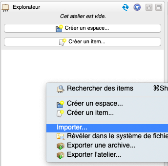

Comment modifier avec Scenari
Installer Opale et Topaze
Pour modifier les documents Scenari Opale, il faut utiliser Opale 3.7 disponible sur :
https://download.scenari.software/Opale@3.7/
Pour modifier les documents Scenari Topaze, il faut utiliser Topaze 1.5 disponible sur : https://download.scenari.software/Topaze@1.5/
Pour apporter des modifications
Il faut ouvrir un atelier (présentation de l'interface de l'atelier) et importer les fichiers sources en faisant clic-droit dans l'explorateur, puis importer.
